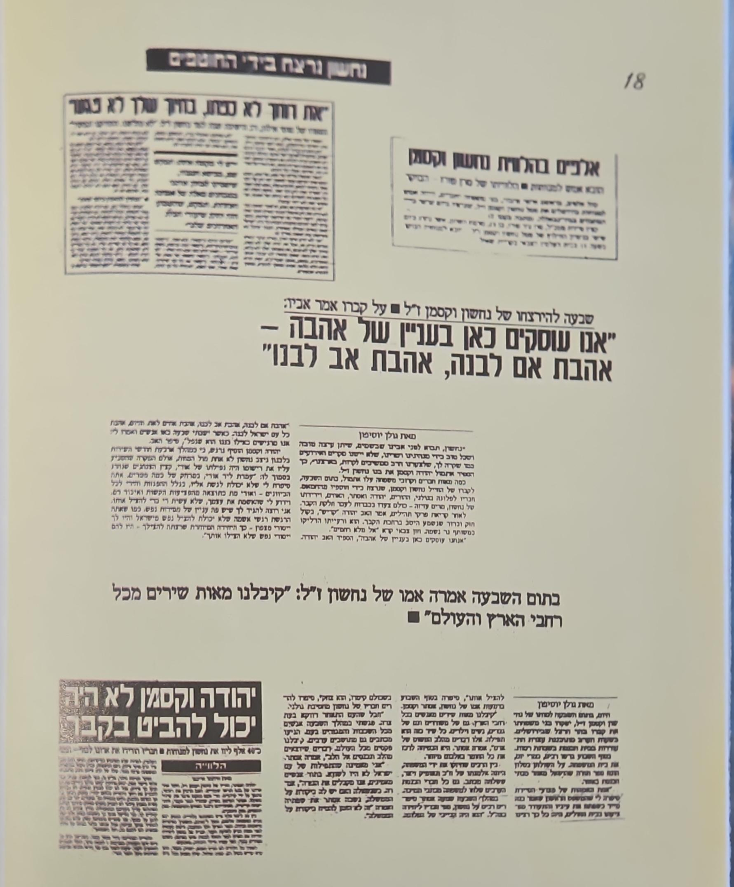

ציר זמן מפורט : חטיפת נחשון וקסמן וניסיון החילוץ אוקטובר 1994
ביום ראשון, 9 באוקטובר 1994, רב"ט נחשון וקסמן, חייל פלוגת עורב של גולני, סיים קורס נהיגת ג'יפים בבסיס בצפון הארץ.
למחרת היה אמור לצאת לשבוע רגילה
לאחר שהות ממושכת בלבנון
חבר מהצוות הוריד אותו
בטרמפיאדה בצומת בני עטרות, משם התכוון להגיע לרמלה לביקור אצל ידידה, ואז להמשיך לביתו בירושלים.
כשהשעה התאחרה ונחשון לא הגיע, משפחתו פנתה לקצין העיר,
שם נאמר להם כי עד שלא יעברו 48 שעות, החייל לא נחשב נעדר, וכי
על פי נסיונם בטווח זמן זה מתגלה כי נסע לבלות באילת .
המשפחה ניסתה להסביר כי מדובר בחייל ממושמע ורציני מיחידה מובחרת שרק יצא לרגילה
וביצע תוכניות
עם חברים לטייל בהמשך השבוע וכעת אף אחד אינו יודע היכן הו
הוא
למרות
תחנוני המשפחה לביצוע פעולות חיפוש מיידיות קצין העיר התייחס בביטול וחזר על כך שיש להמתין 48 שעות.
משפחת וקסמן הבינה שאין ברירה אלא להתארגן עצמאית לחיפושים בשטח היכן שנחשון נראה לאחרונה צומת בני עטרות ליד יהוד.
בסיוע תלמידיה של אמו אסתר מהתיכון שליד האוניברסיטה, חבריו של אחיו מהמכינה הקדם צבאית בעלי, חבריו
של נחשון מהצבא וומהאזרחות ומכרים נוספים
כמאתיים מתנדבים החלו בחיפוש סימנים או רמז כלשהוא בשטח ללא
עזרת הצבא
או גורם
ממשלתי כלשהוא.
אחר הצהריים קיבל יהודה, אביו של נחשון, שיחת טלפון מאלמוני, שהודיע לו כי בנו חי והוא מוחזק כבן ערובה.
בערב הפיץ חמאס קלטת בה הציגו החוטפים את תעודת הזהות ואת נשקו האישי
וכן אולטימטימטום
עד יום
שישי בשעה 21:00
שכלל רשימת אסירים שהם דרשו לשחרר מהכלא,
אחרת יהרגו את נחשוון
לאחר יומיים של אי ידיעה מה עלה בגורלו של בנו והאם הוא חי או מת
שידור הקלטת הרגיע
את אביו
יהודה "עד עכשיו היינו במצב של חוסר ידיעה
אבל עכשיו יש צ'אנס
. נעשה הכל. הכל. נהפוך את העולם כדי שיחזור הביתה."
ביום שלישי, סביב 14:00, הגיעה קלטת נוספת לבית משפחת וקסמן, קשה לצפייה, שבה נראה נחשון כשאקדח מוצמד לראשו, מתחנן על חייו ומפציר בממשלת ישראל לענות לדרישות המחבלים.
הוא אמר
החבר'ה של החמאס פה חטפו אותי. הם רוצים לשחרר את האסירים שלהם. אם לא, הם יהרגו אותי
ההורים שלי מסתכלים עליי ,
?
אני כרגע
. בסדר
אני מקווה לחזור אליכם אם רבין יחליט לשחרר את האסירים שלהם.
האולטימטום נקבע ליום שישי בשעה 20:00
יהודה וקסמן פנה בקריאה אל החוטפים: אתם אנשים מאמינים וגם אני אדם מאמין, על פי הדת שלנו ושלכם יש מצווה חשובה מאוד של פדיון שבויים. כאבא, וכאדם מאמין אני רואה במצווה הזאת של פדיון שבויים ערך עליון. היום ידוע לי שכל העם בישראל יהיה מוכן לתמוך תמיכה כספית בקיום המצווה. אני מציע לפדות את בני בכסף מלא. אני פונה לרגשותיכם, כמו שכתוב בקוראן: אך אם לשלום יטו ונטית אליו והשען על אלוקים כי הוא השומע והיודע'. לנחשון בני היקר, תתחזק ותתגבר."
שידור הקלטת
בטלויזיה הכה את האומה הזעזוע, הלם וזעם. בתקופה ההיא היו מספר מקרי חטיפה של חיילים אשר נרצחו אולם
אולטימטום
משודר לאומה כולה היה חסר תקדים
ויצר
תחושה מוחשית
של אימה,
חרדה ותקווה
נואשת
המדינה כולה חיה על שעון מתקתק. מה שהפך את החטיפה מאירוע ביטחוני מקומי למופע פומבי ולאומי,
מה שגרם
למירוץ מורט עצבים נגד הזמן.
העובדה
שנחשון החזיק גם באזרחות אמריקאית הפכה את האירוע
לסיפור חדשותי בינלאומי כאשר רשתות התקשורת הגדולות בארה"ב שלחו את מיטב הכתבים לישראל על מנת לבקר בשידור חי כל התפתחות
נשיא ארה"ב היה מעורה אישית בפרטים,
הוא
שלח את מזכיר המדינה שלו, וורן כריסטופר
לאזור על
על מנת
לבדוק
האם ערפאת מעורב
היו אלו ימי חתימת הסכם אוסלו וממש באותו שבוע הוכרז כי רבין פרס וערפאת יקבלו פרס נובל לשלום. השושבין של ההסכם היה קלינטון
ואירוע
החטיפה יכל לשבש הכל
ביומיים עד יום שישי מועד סיום האולטימטום העיניים התנהלו בשני צירים מרכזיים: הציר הלאומי עממי הכולל את תגובת עם ישראל לאירועים במופע של אחדות לאומית נדירה הציר השני היה מאחורי הקלעים הציר המדיני בטחוני כאשר בוצעו פעולות מודיעיניות לאיתור הבית בו מוחזק נחשון ונכנות למבצע חילוץ ובמקביל נסיונות לא מוצהרים למשא ומתן כלשהו .
שידור הקלטות הוביל
כולהובי לה לה7
ב
יל
לרמה
את
דופיוצאת ן של אחדות לאומית. דתיים וחילונים, יהודים ושאינם יהודים, כולם חשו תחושת דאגה וסולידריות משותפת, כאילו "אח" קולקטיבי נחטף. תפילות ציבוריות אינטנסיביות, עצרות והתכנסויות המוניות נערכו ברחבי ישראל, ושיקפו את החרדה והתקווה הקולקטיביות.
עשרות אלפים הגיעו לעצרת תפילה מיוחדת בכותל המערבי. בין המתפללים בלט מספרם הרב של החרדים, ביניהם חרדים קיצוניים שזו להם הפעם הראשונה שהם מבקרים ברחבת הכותל, שכן עד עתה נמנע מהם לבקר במקום בגלל האיסור שהוציא האדמו"ר מסטמר
שכינה את מלחמת ששת הימים "עבודת השטן".
בנוסף ניתן היה לראות בכותל מיקרוקוסמוס
של החברה הישאלית
צעירים
י עם ג'ינס קרועים, עגיל באוזן וקוקו על הראש, לצד חסידים עם ציציות על הברכיים ומגבעות. אחדות שלא הייתה כדוגמתה
משטרת מחוז ירושלים סגרה את כל הרחובות המובילים לכותל המערכזהעיר נוצרו
ובמרכז העיר נוצרו ו
פקקי תנועה גדולים. משפחתו של נחשון הוכנסה
לרחבת הכותל המערבי באמצאות ניידת משטרה. הייתה תחושה של אחדות כאשר אנשים
מכל שכבות האוכלוסייה התפללו לשובו של נחשון. גל התמיכה והתפילה מצד מגזרים מגוונים בחברה הישראלית במהלך אותו שבוע היה ביטוי ספונטני של "רקמה אנושית אחת".
בתחילה, המודיעין הישראלי היה משוכנע שנחשון מוחזק בעזה, בשל ההטעיה המכוונת של החמאס. ראש הממשלה יצחק רבין התעמת עם יאסר ערפאת, הטיל עליו את האחריות, והדבר הוביל לחילופי דברים קשים. רבין היה משוכנע שערפאת אינו עושה די או שהוא שותף למעשה. היחסים בין רבין לערפאת היו מתוחים ומלאי חשדנות, למרות הסכמי
אוסלו.
ההנחה שנחשון בעזה התבססה, בין היתר, על כך שכל המסרים והקלטות הגיעו משם. הלחץ "לעשות משהו" וההיסטוריה של מבצעים נועזים, כמו אנטבה, יצרו ציפייה לפעולה החלטית, מה שאולי תרם לקיבעון על ההשערה העזתית.
אסתר וקסמן ביקשה להפעיל לחץ על רבין לנהל משא ומתן. יהודה וקסמן אף הציע בפומבי מיליון דולר תמורת שחרורו של נחשון. רשמית, הממשלה דבקה בעמדה נוקשה נגד משא ומתן עם טרוריסטים. עם זאת, גורמים מתווכים שונים היו מעורבים.
לאורך כל השבוע
רבין סירב
לנהל
משא ומתן עם החוטפים
למרות שהיה ניתן להעביר מסרים
בצורה חכמה ויצירתית
דרך אמצעי התקשורת שכן היה ברור שלמחבלים יש גישה לרדיו וטלויזיה.
יהודה וקסמן אשר כלפי כלי התקשורת שמר על גישה ממלכתית ונמנע מביקורת על הממשלה התפוצץ מזעם על גישה זו של רבין אותה הגדיר כאידיוטית מטומטמת
יהודה חשב שיש לפנות לחוטפים ודרך אמצעי התקשורת על מנת שיהיה איזשהו קשר שיוכל לגרום להארכת זמן האולטימטום והוא אכן פנה
בפומבי והציע
מיליון דולר תמורת, שחרורו של נחשון
גם אסתר ניסתה להפעיל לחץ על רבין לקיים משא ומתן
רבין לא שכח
את הסיוט של עסקת
ג'בריל
משנת 1985 עת כיהן כשר הביטחון.
בעסקה שוחררו 1,150 מחבלים תמורת 3 חיילים
בראש המאבק הציבורי לשחרור עמדה מרים גרוף אמו של החייל החטוף יוסף גרוף.
העסקה גררה ביקורת
רבה
ורב
ין אמר שנכנע לעסקה
ן אמר שנכנכ לעסקה
רבין אמר שהוא נכנע לעסקה מפני
שהוא מ " לא יכולתי להסתכל לה בע
יניי" הפעם
הפעם
רבין
היה
נחוש שהעניינים יתנהלו אחרת.
הוא מינה את תת אלוף יגאל פרסלר יוועץ ראש הממשלה לענייני טרור
כאיש הקשר הבלעדי מטעמו אל מול משפחת וקסמן
פרסלר היה מדווח מידי יום לרבין על הלכי הרוח במשפחה וכאשר רצו
לנקוט ביוזמה עצמאית דאג לעדכן אותם כי יש התפתחויות
מבצעיות
מתחת לפני השטח ופעולה
עצמאית מטעמם
עלולה לפגוע ואף להזיק למאמצים
אלו.
בדיעבד ידוע
כי אלו היו שקרים
ולפרסלר כמו
לשאר בכירי הצבא לא היה מושג ירוק היכן
מוחזק
נחשון
ושום פעילות מיוחדת לא התנהלה מתחת לפני השטח
עד
יום
מותה אסתר חשה רגשי אשמה על שלא עשתה יותר
בהפעלת לחץ לביצוע עסקה
היא
הרגישה
שהמערכת "סיבנה" אותה.
לאחר מספר שנים כאשר גלעד שליט נחטף אסתר ביקשה להפגש
עם ראש הממשלה בנימין נתניהו.
בפגישה
היא
אמרה
לביבי כי היא מוכנה
שישחררו מבית הסוהר את הסייען שעזר לחטוף את נחשון
ומה שחשוב עכשיו זה שגלעד יחזור הביתה.
לאחר שחרורו של גלעד אסתר אמרה כי לולא הפגישה שלה עם ביבי זה לא היה קורה וזה נתן לה נחמה ותחושת סגירת מעגל.
בתוך הממסד הביטחוני הישראלי שרר לחץ עצום לאתר את נחשון. גורמים רשמיים הודו בדיעבד כי ייתכן ש"אנסו את המודיעין" לכיוון עזה בשל הרצון העז למצוא אותו. בית מסוים בחאן יונס אף סומן כיעד לפשיטה אפשרית שלא יצאה לפועל. ערפל הקרב של המשבר, שהוזן מההטעיה המכוונת של החוטפים, הוביל לכך שמשאבים יקרים וזמן קריטי הושקעו בכיוון חקירה שגוי.
ההנחה שנחשון בעזה התבססה, בין היתר, על כך שכל המסרים והקלטות הגיעו משם. הלחץ "לעשות משהו" וההיסטוריה של מבצעים נועזים, כמו אנטבה, יצרו ציפייה לפעולה החלטית, מה שאולי תרם לקיבעון על ההשערה העזתית.
ציעוריסטים. עם זאת, גורמים מתווכים שונים היו מעורבים.
השייח' אחמד יאסין, שמנהיגותו הרוחנית בחמאס הפכה את שחרורו לדרישה מרכזית, רואיין בכלאו על ידי העיתונאי דני לוי. יאסין קרא לחוטפים שלא לפגוע בנחשון. קיימת מחלוקת האם מסר זה, לו היה מתקבל, יכול היה לשנות את התוצאה.
הרב פרומן, ידיד המשפחה, ניסה לרקום עסקה לשחרור יאסין דרך בכיר החמאס מחמוד א-זהאר, אך רבין דחה זאת.
ח"כ טלב א-סאנע נסע לעזה לנהל משא ומתן, והשייח' ראאד סלאח היה מעורב גם הוא כמתווך, ושוחח עם ההנהגה המדינית של החמאס.
ההתמקדות בעזה החלה להתפוגג
כאשר ביום חמישי
כאשר גדעון עזרא
סגן ראש השב"כ דאז
חשד שנחשון נמצא קרוב לירושלים . הוא הורה
לבדוק סוכנויות השכרת רכב. חקירה זו הובילה לג'יהאד ירמור, הנהג, ששכר את רכב הפולקסווגן ששימש לחטיפה.
חקירתו, תחת לחץ, חשפה את מיקומו של נחשון בביר נבאללה מרחק עשר דקות
מבית משפחת וקסמן בשכונת
בשכונת רמות בירושלים
נהג
הרכב
שחטף
את נחשון
היה מזרח ירושלמי שדיבר עברית
שוטפת.
הוא שכר
רכב מסוג
טרנספורטר.
עם לוחיות זיהוי
צהובות.
המחבלים
התחפשו לחרדים
ועל
הדשבורד
במכונית היו תנ"ך וסידור
החוטפים
השמיעו
מוזיקה חסידית
נחשון ראה שנוסעי הרכב האחרים לא מדברים, ורק הנהג מדבר, הוא הושיט יד לנשק שלו, ואז שברו לו את היד.
פריצת הדרך המודיעינית, שינתה דרמטית את החישוב המבצעי. מרגע שהשב"כ האמין שיש לו מיקום מדויק, הלחץ לפתרון צבאי, במיוחד לנוכח המועד האחרון המתקרב הפך עצום.
המומנטום לקראת פשיטה הפך כמעט בלתי ניתן לעצירה, מונע על ידי השעון המתקתק והרצון לפעולה החלטית.
ראש הממשלה רבין היה נחוש בדעתו שלא לנהל משא ומתן מרגע שאפשרות צבאית נראתה ישימה.
2 היחידות המועמדות לביצוע המשימה היו הימ"מ שאף הגיעה ראשונה לשטח
ואשר ייעודה העיקרי הוא ביצוע פעולות חילוץ בני ערובה ועל כך הם מתאמנים כל השנה.
היחידה השנייה - סיירת מטכ"ל
אשר שייכת לאמ"ן ופעולות מסוג זה אינם ייעודה המרכזי של היחידה אולם למרות למרות שעברו 30 שנה פעולת החילוץ שבוצעה על ידה באנטבה נחרטה בזיכרון.
מפקד הימ"מ לא היה בארץ באותו היום כדי להציג תוכנית מבצעית
והרמטכ"ל
אהוד ברק בוגר סיירת מטכל מינה את מפקד אוגדת איו"ש שאול מופז בוגר נוסף של הסיירת להיות אחראי על המבצע . הוא החליט שסיירתמטכל בפיקודושל שחר ארגמן תבצעאת הפעולה
בינתיים מחוץ ל
משפחת
קסמן שהוא מצעי התקש
שהוא אמצעי התקשורת
הבינלאומית והמקומית
אסתר מספרת כי זכור לה במיוחד משה
נוסבאום שישן על הרצפה בחצר הבית
היא הזמינה אותם פנימה כשהדליקה נרות שבת וביקשה מכל אישה יהודיה להדליק נר נוסף ללזכותו של נחשון בהדלקת נרות השבת. אלפי נשים שאינן מדליקות נרות בדרך כלל נענו לבקשה, והדליקו נרות שבת לראשונה בחייהן.
מאות הכתבים שהתגודדו סביב לבית משפחת וקסמן, שנמצא במרחק הליכה קצר מבית הכנסת, התפעלו אחר כך מקולות השירה הרמים של זמירות השבת שעלו מהבית. הם לא הצליחו להבין כיצד משפחה שחיי בנה תלויים על בלימה מסוגלים לשיר – הם פשוט לא היו מסוגלים לתאר לעצמם את האמונה החזקה שהייתה חלק בלתי נפרד מאישיותם של יהודה ואסתר.
ו
המשפחה לא יד
כאמור למשפחה לא היה מושג שפעולת החילוץ כבר יוצאת לדרך.
סיירת מטכל התאמנה למב
צע נועדש לנטרל את המחבלים ולהציל את נחשון
<בינתיים
ניר פורז שהיה כבר בחופשת שחרור, נקרא בדחיפות בחזרה ליחידה כדי להשתתף במבצע,הוא נבחר לעמוד בחוד החנית ולפקד על כוח הפריצה.
תפקידו היה קריטי בניסיון לפרוץ לבית שבו הוחזק נחשון.
המבצע החל בסביבות השעה 19:00 ביום שישי 14 באוקטובר
כשעה לפני סוף מועד
האולטימטושש
הו במקום
הכוח המשיך
קיבל אור ירוק לפעול. הכו
בזחילה זחללון
לכיוון
הבית כשהוא מנצל את הטרסות שמסביבו והצליח להגיע אל קירות הבית מבלי שהתגלה .
הכוח
נתקל בביצורים חזקים מהצפוי, כולל
ולל דל
תות דללתות פלדה מרובות ומחוזקות, שעיכבו את
הכניסה. מטען הנפץ הראשוני לא הצליח לפתוח את הדלת כראוי
כאשר צוותו של ניר החל בפריצה, הם נתקלו מיד באש כבדה ומרוכזת מתוך הבית.
ניר פורז, נפגע ממטח כדורים כשחצה את מפתן הדלת העשויה עץ.
הוא נפל, ניסה להתרומם על ברכיו, אך נפל שוב, פצוע אנושות.
המחבלים התבצרו בחדר עם נחשון. .
ליאור לוטן, קצין בכוח הפורץ, תיאר כיצד ניהל קרב יריות עם שני מחבלים בחדר בו הוחזק נחשון.
אחד המחבלים צעק: "אם לא תלכו, אהרוג את החייל!", ולאחר מכן: "הרגתי אותו, ואני לא מפחד למות!"
המבצע, שהחל בתקוות כה גדולות, הפך במהירות לטרגדיה. בעוד שהמחבלים בתוך הבית נוטרלו, הן נחשון וקסמן והן ניר פורז נהרגו במהלך חילופי האש העזים , וכ-12 לוחמים נוספים נפצעו באורח קל עד בינוני..
במוצאי שבת
התקיימה מסיבת עיתונאים על ידי רבין ה
בישר אומה על הפעולה ותוצאותיה הטרגיות.
לאחר מסיבת העיתונאים ולפני שיצאו ללוויה הגיע רבין לבית משפחת וקסמן.
יהודה ביקש לדבר עם רבין בארבע עיניים במרתף הבית. מתוך החדר נשמעו צעקות.
מאוחר יותר התברר שיהודה דרש לדעת האם היו בסבית אמצעי תקשורת טלויזיה ורדיו והאם ניתן היה להעביר מסרים באמצעים אלה לחוטפים ובמיוחד לאחר שנודע היכן מוחזק נחשון והבית היה מתוצפת 24/7 ללא ידיעת החוטפים. יהודה דרש לדעת מדוע לא הועלו אופציות נוספות מלבד מבצע לחילוץ בן ערובה יחיד בניגוד לאנטבה שם היו עשרות וגם חילוץ של חלקם נחשב להצלחה. לרבין לא היו תשובות והוא יצא מהבית ממרר בבכי
ה
לוו
יותיהם של נחשון
וקסמן וניר פורז משכו קהל רב ואישי ציבור, ושיקפו את האבל הלאומי.
ני
ר פורז נקבר בבית העלמין הצבאי בקריית שאול, לצד אביו, מעוז פורז. כהוקרה על אומץ ליבו ותושייתו יוצאי הדופן במהלך מבצע החילוץ, הוענק לניר פורז לאחר מותו צל"ש הרמטכ"ל, אחד מהעיטורים הצבאיים הגבוהים בי

נחשון הובא למנוחת עולמים במוצאי שבת בחצות הלילה בבית העלמין הצבאי בהר הרצל. כמאה אלף איש השתתפו בהלוויה. בן תשע עשרה היה נחשון בנופלו. הוא הועלה לדרגת סמל לאחר מותו. לבקשת יהודה הרבאילון ראש ישיבת חורב בה למד נחשון נשא את דברי הספד וצןבקשתו של יהודה
ה האב
אני רואה אותך כאן נחשון, עם אותו חיוך קבוע.
אתה, על מה שאתה נחשון הקטן והגדול, הצלחת לעשות לעם שלם.
למדרגה שאליה הצלחת להעלות עם שלם בימים שסועים, קשים,
עם החיוך הזה.
אני רוצה לספר לך, שרק השבוע, זכיתי לגלות,
אחרי הרבה הרבה שנים של הכרות עמוקה, של אהבה גדולה בינינו.
רק השבוע, זכיתי לגלות את המעיין שממנו שאבת את האמונה האדירה הזאת, שהייתה אצלך כל הימים.
באתי אתמול בלילה אל אבא, אל אמא.
אבא תפס אותי וביקש ממני לחשוב רק על דבר אחד.
ניסיתי לנחם, להוציא מילה. אבא עצר ואמר לי: מטריד אותי רק דבר אחד.
"נחשון העלה את כל העם הזה למדרגה כזאת של אמונה. אני אחראי שזה לא ירד עכשיו".
זה מה שהעסיק את אבא, רגע אחרי שאתה כבר לא היתה פה.
רק אתמול הבנתי מאיזה חומר קורצת. …
לא יודע איפה ואיך, ובאיזה עינוי ובאיזו כפיתה היית אז,
אבל את הרוח שלך לא כפתו, את החיוך שלך לא סגרו, את האמונה שלך לא כלאו.
ואת הרוח הזאת שאתה משאיר בנו עכשיו,
אנחנו מתחיבים נחשון, בשם אבא שלך ובשם אמא שלך, בשם האחים שלך,
בשם כל החבר'ה האמיתיים שלך מהישיבה, מהיחידה – כמה רצית כבר לענוד את האות הזה של העורב.
אנחנו מתחייבים שאת הרוח הזאת הלא כלואה, אנחנו נמשיך להוציא שבעתיים.
לא נחלשנו אתמול בלילה נחשון, התחזקנו.
ונמשיך עם ההבנה מאיפה החומר הזה קורץ.
אבא הוסיף ואמר לי עוד משפט אחד, גם אותו אני חייב להעביר לך:
"כל כך הרבה בקשות" כך הוא אמר לי, "ביקשתי מהקב"ה. ביקשתי בריאות בשעה שהייתי חולה",
ואתה יודע כמה אבא היה חולה וזכה לצאת,
"שאלו אותי" אומר אבא "התפללו כל כך הרבה ולא קיבלו תשובה.
"וקיבלתי. ביקשתי משפחה כמו שלנו – וקיבלתי. ביקשתי את כל מה שרציתי".
"ואני אומר" כך הוא אומר לי, " קיבלתי תשובה, התשובה היתה לא! ולאבא – מותר לענות גם לא!" …"
הרב סיפר כי יהודה אמר לו כי הוא שומע אניה, לא. וגם לא היא תשובה!'.
מאוחר יותר התברר כי
עם
תחילת הפעולה כאשר הכוח החל בזחילה לעבר הבית
נצפה
משתף פעולה נוסף של החוטפים
נכנס אל הבית
באמצעות מפתח
כעבור 20 דקות הוא יצא ונחקר
ומסר
שנחשון בחיים
מטרת הגעתו הייתה להביא אוכל. הוא סיפר כי הביא כנאפה ממזרח ירושלים גם עבור נחשון.
על אף השינוי הדרמטי בנסיבות,
העובדה
כי ההכנות
למבצע
מסובך הדורש מודיעין , תכנון
ואמצעים
ברמה
של פינצטה,
העובדה כי המחבלים אינם
היו
מודעים
לכך
שמיקומם התגלה
ושהבית
מתוצפת 24 שעות ביממה,
ומעצרו
של משתף פעולה נוסף עם מפתח לבית
לא נעשו
על ידי הדרג המחליט
שכלל את
הרמטכל אהוד ברק, מפקד אוגדת איו"ש
שאול מופז
וראש הממשלה
יצחק רבין
ניסיונות
לקניית
זמן או
לחשיבה מחודשת
ויצירתית
הם היו
נחושים
לפעול בכוח וולהמשיך עם הפעולה הצבאית
וזאת למרות הסיכון הרב וסיכויי ההצלחה הקלושים.
בנוסף נודע
כי הייתה
מריבה
בין סיירת מטכ"ל והימ"מ בנוגע להחלטה מי
יפרוץ לבית
.
אסתר סיפרה כי
פגשה בכנסת את אסף חפץ
שהיה בעברו מפקד הימ"מ
שאמר לה
'אם אנחנו היינו עושים את זה, הוא היה חי'",
התוצאה הייתה קשה
דלת הבית
לא נפתחה על פי המתוכנן,
הכוח לא הפתיע את החוטפים אשר הרגו את נחשון מייד בתחילת המבצע
ניר נהרג
כשהוא בקושי פתח את הדלת ו,
12
חיילים
נפצעו.
השיח יאסין אשר
שחרורו היה גורם ככל הנראה לשחרור נחשון שוחרר כעבור שנתיים עבור שני סוכני מוסד שנעצרו בירדן
ואשר
לא היו בסכנת חיים.
גילוי מיקום הבית
על ידי
גדעון עזרא נחשב לאחד ההצלחות המודיעיניות המרשימות בהיסטוריה . הצלחה אשר מוסמסה בשל חוסר יצירתיות ויהירות
של בכירי צבא הגנה לישראל


 בתוך הממסד הביטחוני הישראלי שרר לחץ עצום לאתר את נחשון. גורמים רשמיים הודו בדיעבד כי ייתכן ש"אנסו את המודיעין" לכיוון עזה בשל הרצון העז למצוא אותו. בית מסוים בחאן יונס אף סומן כיעד לפשיטה אפשרית שלא יצאה לפועל. ערפל הקרב של המשבר, שהוזן מההטעיה המכוונת של החוטפים, הוביל לכך שמשאבים יקרים וזמן קריטי הושקעו בכיוון חקירה שגוי.
בתוך הממסד הביטחוני הישראלי שרר לחץ עצום לאתר את נחשון. גורמים רשמיים הודו בדיעבד כי ייתכן ש"אנסו את המודיעין" לכיוון עזה בשל הרצון העז למצוא אותו. בית מסוים בחאן יונס אף סומן כיעד לפשיטה אפשרית שלא יצאה לפועל. ערפל הקרב של המשבר, שהוזן מההטעיה המכוונת של החוטפים, הוביל לכך שמשאבים יקרים וזמן קריטי הושקעו בכיוון חקירה שגוי.